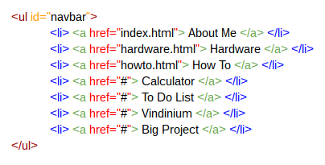
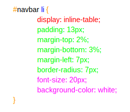
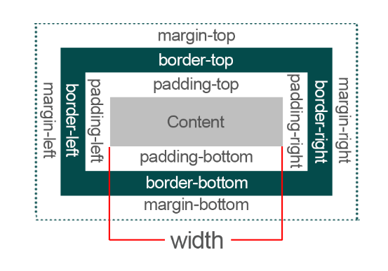

To create a menu, you need to first insert your
contents. For the menu that I've created on my page,
my HTML structure looks like this:

- An < ul > tag stands for unordered
list. Its function is to create or set off a bulleted list.
There is also an ol tag, < ol >. It is an ordered list
that set off a numbered list or procedures. In this case
however, the ul tag is a better option than an ol tag
because you do not need your menu to be numbered.
- Labeling the ID as "navbar" will
help CSS to identify that this is the area you want to
modify.
- A li tag, < li >, stands for
list item. Its function is to insert the contents of a
bullet point. Using both the unordered list tag and the
list item tag will give you an unordered list. The li tag
also works with ordered lists.
- An < a > tag indicates a
hyperlink. It allows you to link your current page to
another page. The < a > tag is an important tag for
creating a menu because bringing visitors to another page
as a shortcut form is the whole purpose of a menu.
- The href attribute is used to
insert a page URL. The < a > tag needs a href attribute in
order to be activated as a hyperlink.
Now that I've entered the contents of my menu,
I would need to personalize it. As mentioned in CSS introduction,
CSS allows me to modify the layouts and designs. The CCS
structure of my menu looks like this:

- Since the navigation bar was labeled
as an ID in the HTML, you use a hashtag (#) in CSS to indicate
that this is the section you want to modify.
- To modify the list items more
specifically, you would add li after #navbar. This way, every
customizations you make would direct only to the list items.
- The display of inline-table is
important if you want your tabs to be aligned. If this
input is missing, the menu of your website would be in a
listed form down the page.
- The margin and padding functions
are responsible for the spacing in between contents.
Specifically, the margin's thickness determines the area
outside of the border whereas the padding's thickness
determines the area between the border and the contents.

- In fact, the declarations
blocks are relatively straightforward and self
explanatory. For instance, the font size changes
the word size while the background color changes the
background color.